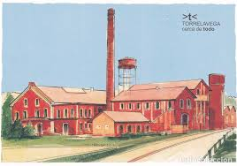

Torrelavega
La lechera
La via verde
|

Conocido en sus inicios como Azucarera Montañesa y posteriormente como Lechera Montañesa, hoy se llama cariñosamente La Lechera al actual Recinto de Feria de Muestras de Cantabria, el cual cuenta con una extensión interior de 5.000 metros cuadrados y una superficie exterior de 23.000.
En 1985 el edificio fue restaurado conservando el original estilo arquitectónico industrial, mediante un acuerdo entre el Ayuntamiento de Torrelavega y la Diputación Regional de Cantabria.
El Recinto Ferial alberga numerosas exposiciones de diversa índole, como automoción, antigüedades o tecnología. También realiza periódicamente mercados de exposición y venta, y ocasionalmente conciertos. |